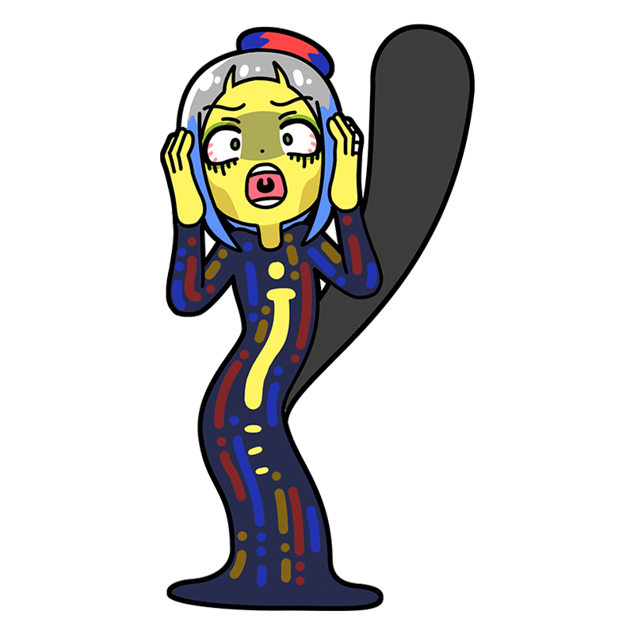

うぉらぁぁぁぁっ！
自然の、叫びを、聞けぇぇぇぇっ！
ムンク
自然を貫く叫びを聞け！
北欧が生んだ狂えるミューズ
ノルウェー最大の巨匠ミューズ。幻覚、幻聴から着想を得た作品を多く残しており、なかでも『叫び』はあまりにも有名。とにかく声がデカく世間話をするのも一苦労だが、意外にも常識はあるほうである。
様式
表現主義
出身国
スウェーデン＝ノルウェー連合王国
代表作
- 『叫び』
- 『思春期』
- 『生命の踊り』など
ムンクといえばこの一枚！
叫び
血のように赤く歪んだ空の下、どこからか聴こえてくる自然を貫くほどの叫び声に耳をふさぎ耐えている人物。本来は恐ろしい絵だが、どこかユーモラスな見た目からか様々なパロディで使われ、日本での知名度は非常に高い。油彩のほかパステルやテンペラなどを用いて繰り返し描いており、全部で5枚が存在する。
制作年
1893年
技法・材質
油彩、厚紙
寸法
91 cm x 73.5 cm
所蔵
オスロ国立美術館
(ノルウェー)
作品画像出典: https://commons.wikimedia.org/wiki/File:The_Scream.jpg
ムンクってどんな芸術家？
エドヴァルド・ムンク
ノルウェーの紙幣の図柄にも採用されたことがある国民的画家。なかなか芸術が認められず、精神も不安定になる中でドイツに移住するなどして作品を描き続け、ついには存命中に高い評価を獲得するに至った努力と根性の画家である。『叫び』などをはじめとした、自らの精神を表現した狂気的な作品の印象からおどろおどろしい絵ばかり描いているイメージがあるが、実際は肖像画、風景画、労働者の姿を描いた作品も多く残している。
フルネーム
Edvard Munch
誕生
1863年12月12日
死没
1944年1月23日(80歳没)